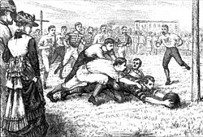

|
HISTÓRIA A história do rugby é rica e repleta de desenvolvimentos que se estendem por mais de um século. O esporte teve suas raízes na Inglaterra e evoluiu de maneira interessante ao longo do tempo. Abaixo, descreverei a história do rugby, destacando seus principais eventos e marcos:

Origens: A história do rugby remonta ao início do século XIX, na Inglaterra. Diz-se que o esporte teve origem na escola de Rugby, em 1823, quando William Webb Ellis, um aluno da escola, pegou a bola com as mãos durante uma partida de futebol (soccer) e correu em direção à linha de gol adversária. Esse ato é frequentemente citado como o momento de nascimento do rugby. Nos primeiros anos, o rugby era caracterizado por regras informais e variadas, com cada escola ou clube tendo suas próprias interpretações do jogo. Isso levou à necessidade de padronização das regras. Padronização das Regras: Em 1871, a Rugby Football Union (RFU) foi fundada, estabelecendo regras oficiais para o rugby union. Isso marcou um ponto crucial na história do rugby, trazendo uniformidade ao esporte e permitindo sua expansão. O rugby league, uma derivação do rugby union, surgiu no início do século XX, quando jogadores do norte da Inglaterra decidiram se profissionalizar, criando regras diferentes que incluíam pagamento de salários aos jogadores. Expansão Internacional: O rugby union se expandiu internacionalmente, com a primeira partida internacional ocorrendo em 1871 entre a Inglaterra e a Escócia. O esporte cresceu rapidamente e ganhou popularidade em países como Nova Zelândia, Austrália, África do Sul e França. A primeira turnê de um time de rugby do Hemisfério Sul para o Hemisfério Norte aconteceu em 1888-1889, quando a Nova Zelândia enviou uma equipe para jogar na Grã-Bretanha e na França. Isso fortaleceu o rugby internacional. Competições e Torneios: A primeira Copa do Mundo de Rugby Union foi realizada em 1987, na Nova Zelândia e na Austrália, marcando outro marco na história do esporte. Desde então, a Copa do Mundo de Rugby Union se tornou um dos maiores eventos esportivos do mundo. No rugby league, a competição mais importante é a NRL (National Rugby League) na Austrália, e a Super League na Europa. Valores do Rugby: O rugby é conhecido por seus valores tradicionais, como respeito, integridade, fair play e trabalho em equipe. Esses valores são fundamentais para o esporte e são transmitidos de geração em geração. A história do rugby é um testemunho de sua evolução e disseminação em todo o mundo. O esporte, que teve origem em uma pequena escola na Inglaterra, tornou-se uma paixão global, unindo comunidades e culturas através de sua tradição e valores únicos. |